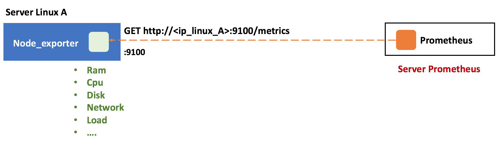
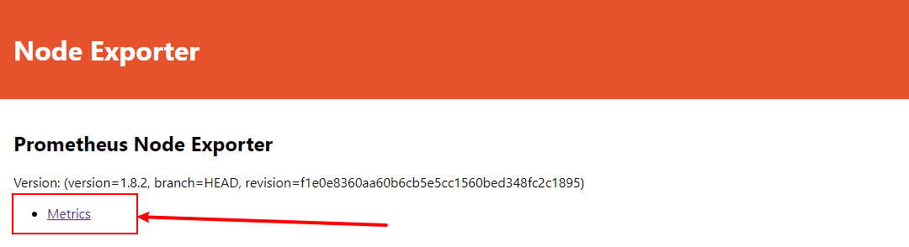
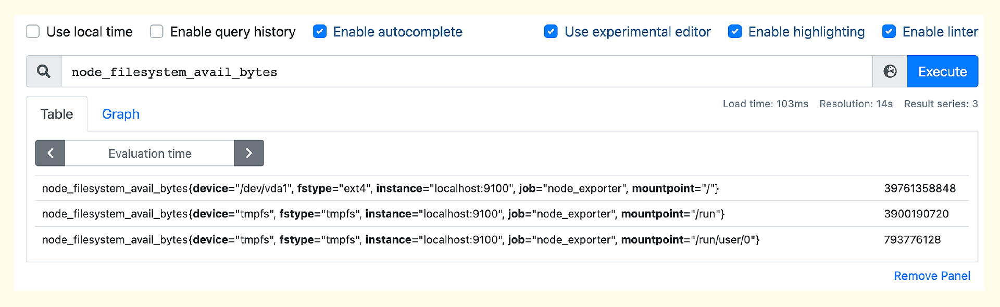

部署 node_exporter
安装简介：
- docker 或 docker-compose 部署
- 二进制
- kubernetes 中使用 daemonset 部署

二进制部署node_exporter：
下载安装文件
root@prometheus-node1:~# mkdir /apps
root@prometheus-node1:~# cd /apps
# tar xvf node_exporter-1.5.0.linux-amd64.tar.gz
# ln -sv /apps/node_exporter-1.5.0.linux-amd64 /apps/node_exporter
‘/apps/node_exporter’ -> ‘/apps/node_exporter-1.5.0.linux-amd64’
# ll /apps/node_exporter/
total 17820
-rw-r--r-- 1 3434 3434 11357 Dec 5 19:15 LICENSE
-rwxr-xr-x 1 3434 3434 18228926 Dec 5 19:10 node_exporter
-rw-r--r-- 1 3434 3434 463 Dec 5 19:15 NOTICE
创建service文件：
root@prometheus-node1:~# vim /etc/systemd/system/node-exporter.service
[Unit]
Description=Prometheus Node Exporter
After=network.target
[Service]
ExecStart=/apps/node_exporter/node_exporter
[Install]
WantedBy=multi-user.target
root@prometheus-node1:~#systemctl daemon-reload && systemctl start node-exporter && systemctl enable node-exporter.service
Docker 部署
https://github.com/prometheus/node_exporter
docker run -d --net="host" --pid="host" -v "/:/host:ro,rslave" quay.io/prometheus/node-exporter:latest --path.rootfs=/host
kubernetes 中使用 daemonset 部署
验证node_exporter web界面：

Node-Exporter 默认的监听端口是9100，我们可以通过下面的命令看到 Node-Exporter 采集的指标。
curl -s localhost:9100/metrics
然后把 Node-Exporter 的地址配置到 prometheus.yml 中即可。修改了配置之后，记得给 Prometheus 发个 HUP 信号，让 Prometheus 重新读取配置： kill -HUP <prometheus pid>。最终 scrape_configs 部分变成下面这段内容。
如果是 docker 部署的 prometheus，node_exporter 对应的 target 地址要换成主机的网卡地址，否则会获取不到对应的地址。
root@prometheus-server1:~# vim /apps/prometheus/prometheus.yml
scrape_configs:
- job_name: 'prometheus'
static_configs:
- targets: ['localhost:9090']
- job_name: 'node_exporter'
static_configs:
- targets: ['localhost:9100']
其中 targets 是个数组，如果要监控更多机器，就在 targets 中写上多个 Node-Exporter 的地址，用逗号隔开。之后在 Prometheus 的 Web 上（菜单位置Status -> Targets），就可以看到相关的 Targets 信息了。
在查询监控数据的框里输入 node，就会自动提示很多 node 打头的指标。这些指标都是 Node-Exporter 采集的，选择其中某一个就可以查到对应的监控数据，比如查看不同硬盘分区的余量大小。

Node-Exporter 默认内置了很多 collector，比如 cpu、loadavg、filesystem 等，可以通过命令行启动参数来控制这些 collector，比如要关掉某个 collector，使用 --no-collector.<name>，如果要开启某个 collector，使用 --collector.<name>。具体可以参考 Node-Exporter 的 README。Node-Exporter 默认采集几百个指标。
node节点常见指标：
- node_boot_time：系统自启动以后的总结时间
- node_cpu：系统CPU使用量
- node_disk*：磁盘IO
- node_filesystem*：系统文件系统用量
- node_load1：系统CPU负载
- node_memory*：内存使用量
- node_network*：网络带宽指标
- node_time：当前系统时间
- go_*：node exporter中go相关指标
- process_*：node exporter自身进程相关运行指标